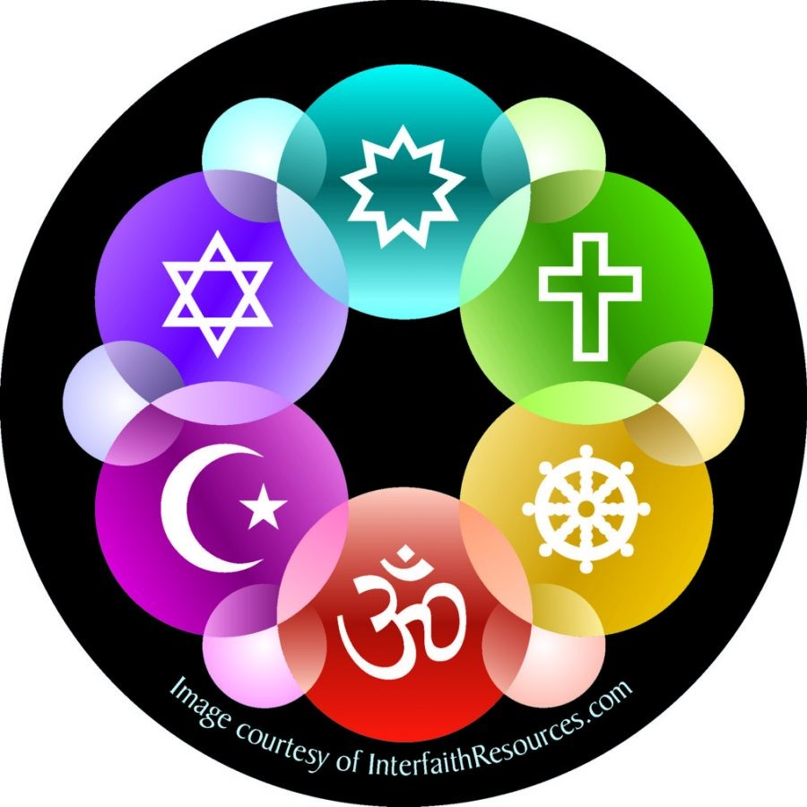

Biography Of Abdul Kalam
Religious And Spiritual Views

Islam:
A proud and practising Muslim, daily namaz and fasting during Ramadan were integral to Kalam's life.
His father, the imam of a mosque in his hometown of Rameswaram, had strictly instilled these Islamic
customs in his children.His father had also impressed upon the young Kalam the value of interfaith
respect and dialogue. As Kalam recalled: "Every evening, my father A.P. Jainulabdeen, an imam,
Pakshi Lakshmana Sastry, the head priest of the Ramanathaswamy Hindu temple, and a church priest used
to sit with hot tea and discuss the issues concerning the island."Such early exposure convinced Kalam
that the answers to India's multitudinous issues lay in "dialogue and cooperation" among the country's
religious, social, and political leaders.[130] Moreover, since Kalam believed that "respect for other faiths"
was one of the key cornerstones of Islam, he was fond of saying: "For great men, religion is a way of
making friends; small people make religion a fighting tool."
Pramukh Swami as Guru:
Kalam's desire to meet spiritual leaders to help create a more prosperous, spiritual, and unified India
was what initially led him to meet Pramukh Swami, the Hindu guru of the BAPS Swaminarayan Sampradaya,
who Kalam would come to consider his ultimate spiritual teacher and guru.The first of eight meetings
between Kalam and Pramukh Swami over a fourteen-year period took place on 30 June 2001 in New Delhi,
during which Kalam described being immediately drawn to Pramukh Swami's simplicity and spiritual purity.
Kalam stated that he was inspired by Pramukh Swami throughout their numerous interactions.
One such incident occurred the day following the terrorist attack on BAPS' Akshardham, Gandhinagar
complex in September 2002; Pramukh Swami prayed for, and sprinkled holy water upon, the sites of all of
the deceased, including the terrorists, demonstrating the view that all human life is sacred.